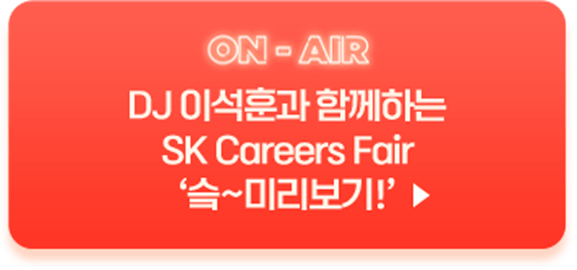
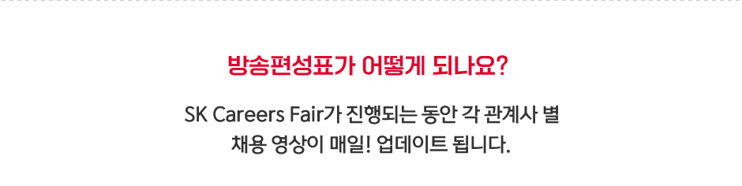

영상 제목을 클릭하면 해당 영상을 보실 수
있습니다.
8.23(월) 14:00
| 2021 하반기 SK 신입 채용 | DJ이석훈의 SK Careers Fair 슼~미리보기 SK그룹XDJ이석훈 슼 보이는 채용라디오 슼~보라 | |
8.31(화) 10:00
| SK주식회사 C&C | 슼보라: SK주식회사 C&C, On-Air |
| SK이노베이션 | 슼보라: SK이노베이션 채용, On-Air |
| SK E&S | 슼보라: SK E&S 채용, On-Air |
| SK실트론 | 슼보라: SK실트론 채용, On-Air |
| SK바이오팜 | 슼보라: SK바이오팜 채용, On-Air |
9.1(수) 10:00
| SK이노베이션 | SK이노베이션 배터리 직무의 모든 것_직무편 |
9.2(목) 10:00
| 2021 하반기 SK 신입 채용 | SK Careers Fair 촬영 비하인드 (Feat. DJ 석훈) |
9.3(금) 10:00
| SK이노베이션 | SK이노베이션 배터리 직무의 모든 것_입사꿀팁편 |